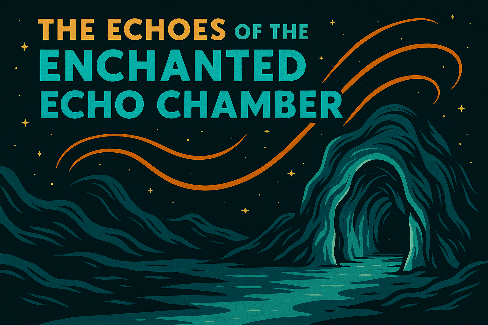

Here's a complete entry for your new curiosity, following the tone, structure, and formatting of the others:
🎙️ The Echoes of the Enchanted Echo Chamber¶
(The Resono Cavern of Eldoria)¶

Location of Origin: Eldoria Prime, Hollow Continent — Subvocalic Rift Zone
Speak a word inside the Resono Cavern and it will respond, not with what you said, but with what it thinks you meant. This has led to diplomatic incidents, accidental marriage proposals, and at least one spontaneous intergalactic poetry slam judged by confused subterranean eels.
| Stat | Value |
|---|---|
| Groovitons | 4.3 gvt (fluctuates with emotional sincerity) |
| Acoustic Complexity Index | 85.1 (subjective harmonic resonance) |
| Vibrational Risk Factor | Unstable (may trigger involuntary confessions) |
| Temporal Stability Rating | High (but conversational continuity is unreliable) |
| Cultural Reverence Index | Considered sacred by therapists, bards, and one AI with abandonment issues |
| Researcher Sanity Impact | Mild, unless already in a complicated relationship |
📍 Discovery¶
The Resono Cavern was first discovered when a diplomatic envoy from the Andrellan Union attempted to recite a treaty clause and was instead told, “You’re just afraid of commitment, Jared.”
Multiple investigations confirmed that the cave contains a rare semi-sentient echo phenomenon — a psychoacoustic anomaly capable of interpreting subtext, body language, and unresolved guilt before responding.
📜 Historical Background¶
Legends among Eldorian shamans speak of the Cavern as “The Chamber of Unspoken Truths”, a place where words are stripped of deceit and echoed back as soul-baring revelations.
While once used in ancient truth-seeking rituals and break-up ceremonies, modern attempts to exploit the Cavern for political negotiations were abandoned after a single three-minute dialogue resulted in a planetary divorce, an interstellar restraining order, and the formation of an avant-garde jazz band.
🔊 Acoustic Properties¶
- Primary Frequencies: Midrange vocal harmonics laced with unpredictable overtone clusters.
- Rhythmic Structure: Mimics speech cadence, but with interpretive overlay drawn from emotional undertones.
-
Known Effects:
-
Unintended emotional vulnerability.
- Sudden compulsion to clarify your actual feelings.
- Spontaneous free verse competitions with your own echo.
🧪 Field Observations¶
- Response to Tone: Whispered secrets provoke symphonic choral echoes. Yelling produces passive-aggressive sighs.
- Containment Strategy: None viable. The Chamber has refused all attempts at acoustic isolation, usually with sarcastic retorts.
- Environmental Impact: Nearby plant life exhibits increased poetic complexity in pollen dispersal patterns.

📖 Cultural Notes¶
The Cavern has inspired:
- Therapeutic retreats that last until someone cries.
- Battle-rap duels resolved through interpretive echo rebuttals.
- One cult that believes the Chamber is the universe’s subconscious, and regularly asks it for dating advice.
Visitors are advised to speak only if prepared to hear their true intentions… or at least a deeply unsettling approximation.
🧩 Curiosities Within the Curiosity¶
- A visiting bard once sang a love song into the Chamber and received a proposal in return — from the Chamber.
- An experimental AI linguist claimed the Cavern helped it understand the concept of "vibes." It now writes poetry.
- One recorded echo contains an accurate prediction of a future breakup — five years before it happened.
🧁 Lucy's Field Notes¶
Research Log — Lucy the Cat Recorded during Resono Cavern Listening Session 4.
- “Tried to ask for directions. Got a monologue about my trust issues instead.”
- “The acoustics are too honest. Bring a blanket and emotional snacks.”
- “If it whispers your name followed by your ex’s name, leave. Immediately.”
🎭 Current Opera Performances Featuring the Echo Chamber¶
- "Dialogue with a Cave" (nominated for Most Emotionally Confusing Monologue, Year 84-G)
- "Echoes of My Better Self" (requires six voice actors and one licensed therapist)
- "The Reverb of Regret" (banned on two moons for audience weeping fits)
📜 Access Classification¶
- Archive Status: Selective Playback — Level 3 or those undergoing identity crises
- Access Requirements: Must sign waiver acknowledging potential existential discomfort.
Listening Warning: “May induce introspection, emotional breakthrough, or severe side-eye from your echo.”
🚀 Final Remarks¶
The Echoes of the Enchanted Echo Chamber remind us that sometimes, the universe isn’t just listening. It’s judging. And quoting you. Accurately.
Handle with honesty. And maybe bring tissues.